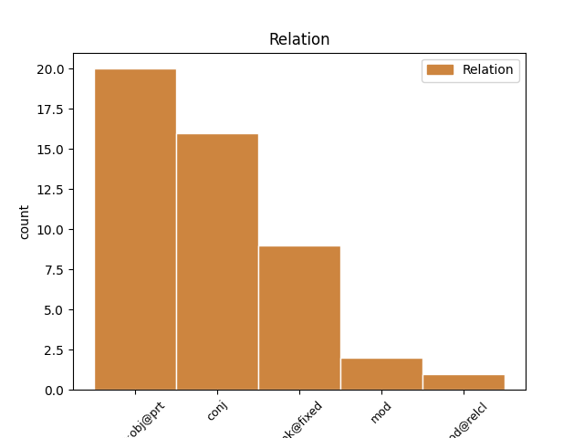
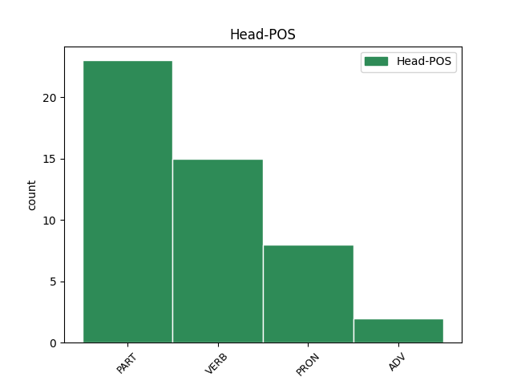
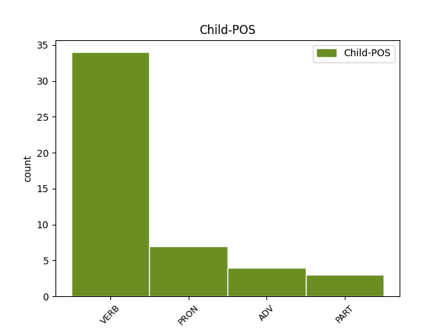

Distribution of features within this leaf



Agreement Rules sorted by frequency.
- When the dependent token is the conjunct(conj) of the head token,
1 Bhiodh bi VERB V-h Mood=Cnd 0 _ _ _
2 teine _ _ _ _ 0 _ _ _
3 mór _ _ _ _ 0 _ _ _
4 mòna _ _ _ _ 0 _ _ _
5 air _ _ _ _ 0 _ _ _
6 ’s _ _ _ _ 0 _ _ _
7 bhiodh bi VERB V-h Mood=Cnd 1 conj _ _
8 an _ _ _ _ 0 _ _ _
9 còmhradh _ _ _ _ 0 _ _ _
10 math _ _ _ _ 0 _ _ _
11 . _ _ _ _ 0 _ _ _
1 Car car ADV Uq Mood=Int 0 _ _ _
2 son son ADV Uq Mood=Int 1 unk@fixed _ _
3 air _ _ _ _ 0 _ _ _
4 thalamh _ _ _ _ 0 _ _ _
5 a _ _ _ _ 0 _ _ _
6 rinn _ _ _ _ 0 _ _ _
7 i _ _ _ _ 0 _ _ _
8 a _ _ _ _ 0 _ _ _
9 leithid _ _ _ _ 0 _ _ _
10 ? _ _ _ _ 0 _ _ _
1 “ _ _ _ _ 0 _ _ _
2 Cumaibh _ _ _ _ 0 _ _ _
3 oirbh _ _ _ _ 0 _ _ _
4 a _ _ _ _ 0 _ _ _
5 dh’iomall _ _ _ _ 0 _ _ _
6 a’ _ _ _ _ 0 _ _ _
7 cheò _ _ _ _ 0 _ _ _
8 , _ _ _ _ 0 _ _ _
9 " _ _ _ _ 0 _ _ _
10 as _ _ _ _ 0 _ _ _
11 esan _ _ _ _ 0 _ _ _
12 , _ _ _ _ 0 _ _ _
13 “ _ _ _ _ 0 _ _ _
14 's _ _ _ _ 0 _ _ _
15 na na PART Qnm Mood=Imp|PartType=Vb|Polarity=Neg 0 _ _ _
16 biodh bi VERB Vm-3 Mood=Imp 15 comp:obj@prt _ _
17 eagal _ _ _ _ 0 _ _ _
18 oirbh _ _ _ _ 0 _ _ _
19 . _ _ _ _ 0 _ _ _
20 " _ _ _ _ 0 _ _ _
1 “ _ _ _ _ 0 _ _ _
2 Càit' càit' ADV Uq Mood=Int 6 mod _ SpaceAfter=No
3 , _ _ _ _ 0 _ _ _
4 'illean _ _ _ _ 0 _ _ _
5 , _ _ _ _ 0 _ _ _
6 an an PART Qq Mood=Int|PartType=Vb|PronType=Int 0 _ _ _
7 d’ _ _ _ _ 0 _ _ _
8 fhuair _ _ _ _ 0 _ _ _
9 sibh _ _ _ _ 0 _ _ _
10 e _ _ _ _ 0 _ _ _
11 ? _ _ _ _ 0 _ _ _
12 " _ _ _ _ 0 _ _ _
1 Ach _ _ _ _ 0 _ _ _
2 a _ _ _ _ 0 _ _ _
3 bheil _ _ _ _ 0 _ _ _
4 fhios _ _ _ _ 0 _ _ _
5 agad _ _ _ _ 0 _ _ _
6 cò cò PRON Uq Mood=Int 0 _ _ _
7 air _ _ _ _ 0 _ _ _
8 an an PART Qq Mood=Int|PartType=Vb|PronType=Int 6 mod@relcl _ _
9 robh _ _ _ _ 0 _ _ _
10 mi _ _ _ _ 0 _ _ _
11 smaoineachadh _ _ _ _ 0 _ _ _
12 ? _ _ _ _ 0 _ _ _
Disagree Examples:
1 An _ _ _ _ 0 _ _ _
2 dèidh _ _ _ _ 0 _ _ _
3 latha _ _ _ _ 0 _ _ _
4 obrach _ _ _ _ 0 _ _ _
5 bu _ _ _ _ 0 _ _ _
6 tric _ _ _ _ 0 _ _ _
7 leis _ _ _ _ 0 _ _ _
8 a _ _ _ _ 0 _ _ _
9 dhol _ _ _ _ 0 _ _ _
10 a-staigh _ _ _ _ 0 _ _ _
11 don _ _ _ _ 0 _ _ _
12 bhaile _ _ _ _ 0 _ _ _
13 , _ _ _ _ 0 _ _ _
14 don _ _ _ _ 0 _ _ _
15 taigh-òsda _ _ _ _ 0 _ _ _
16 , _ _ _ _ 0 _ _ _
17 far _ _ _ _ 0 _ _ _
18 an an PART Qq Mood=Int|PartType=Vb|PronType=Int 0 _ _ _
19 gabhadh gabh VERB V-h--d Mood=Cnd 18 comp:obj@prt _ _
20 e _ _ _ _ 0 _ _ _
21 pinnt _ _ _ _ 0 _ _ _
22 . _ _ _ _ 0 _ _ _
1 Thuirt _ _ _ _ 0 _ _ _
2 an _ _ _ _ 0 _ _ _
3 t-òstair _ _ _ _ 0 _ _ _
4 gu _ _ _ _ 0 _ _ _
5 robh _ _ _ _ 0 _ _ _
6 cead _ _ _ _ 0 _ _ _
7 aca _ _ _ _ 0 _ _ _
8 suidhe _ _ _ _ 0 _ _ _
9 far _ _ _ _ 0 _ _ _
10 an an PART Qq Mood=Int|PartType=Vb|PronType=Int 0 _ _ _
11 togradh togr VERB V-h--d Mood=Cnd 10 comp:obj@prt _ _
12 iad _ _ _ _ 0 _ _ _
13 - _ _ _ _ 0 _ _ _
14 nach _ _ _ _ 0 _ _ _
15 robh _ _ _ _ 0 _ _ _
16 àite _ _ _ _ 0 _ _ _
17 air _ _ _ _ 0 _ _ _
18 a _ _ _ _ 0 _ _ _
19 thoirmeasg _ _ _ _ 0 _ _ _
20 . _ _ _ _ 0 _ _ _
1 Sgrùd _ _ _ _ 0 _ _ _
2 ise _ _ _ _ 0 _ _ _
3 a _ _ _ _ 0 _ _ _
4 bha _ _ _ _ 0 _ _ _
5 an _ _ _ _ 0 _ _ _
6 làthair _ _ _ _ 0 _ _ _
7 is _ _ _ _ 0 _ _ _
8 thug _ _ _ _ 0 _ _ _
9 i _ _ _ _ 0 _ _ _
10 an _ _ _ _ 0 _ _ _
11 aire _ _ _ _ 0 _ _ _
12 do _ _ _ _ 0 _ _ _
13 shùilean _ _ _ _ 0 _ _ _
14 mear _ _ _ _ 0 _ _ _
15 Iain _ _ _ _ 0 _ _ _
16 , _ _ _ _ 0 _ _ _
17 ged _ _ _ _ 0 _ _ _
18 a _ _ _ _ 0 _ _ _
19 b' _ _ _ _ 0 _ _ _
20 e _ _ _ _ 0 _ _ _
21 Tormod _ _ _ _ 0 _ _ _
22 a _ _ _ _ 0 _ _ _
23 thuirt _ _ _ _ 0 _ _ _
24 a-rithist _ _ _ _ 0 _ _ _
25 gu _ _ _ _ 0 _ _ _
26 robh _ _ _ _ 0 _ _ _
27 na _ _ _ _ 0 _ _ _
28 sùilean _ _ _ _ 0 _ _ _
29 aicese _ _ _ _ 0 _ _ _
30 coltach _ _ _ _ 0 _ _ _
31 ri _ _ _ _ 0 _ _ _
32 glumag _ _ _ _ 0 _ _ _
33 dhorcha _ _ _ _ 0 _ _ _
34 , _ _ _ _ 0 _ _ _
35 dhomhainn _ _ _ _ 0 _ _ _
36 far _ _ _ _ 0 _ _ _
37 am am PART Qq Mood=Int|PartType=Vb|PronType=Int 0 _ _ _
38 bogadh bog VERB V-h--d Mood=Cnd 37 comp:obj@prt _ _
39 tu _ _ _ _ 0 _ _ _
40 do _ _ _ _ 0 _ _ _
41 làmh _ _ _ _ 0 _ _ _
42 is _ _ _ _ 0 _ _ _
43 tu _ _ _ _ 0 _ _ _
44 a' _ _ _ _ 0 _ _ _
45 sireadh _ _ _ _ 0 _ _ _
46 breac _ _ _ _ 0 _ _ _
47 ach _ _ _ _ 0 _ _ _
48 anns _ _ _ _ 0 _ _ _
49 an _ _ _ _ 0 _ _ _
50 robh _ _ _ _ 0 _ _ _
51 a _ _ _ _ 0 _ _ _
52 leithid _ _ _ _ 0 _ _ _
53 de _ _ _ _ 0 _ _ _
54 thàladh _ _ _ _ 0 _ _ _
55 is _ _ _ _ 0 _ _ _
56 gum _ _ _ _ 0 _ _ _
57 faigheadh _ _ _ _ 0 _ _ _
58 tu _ _ _ _ 0 _ _ _
59 air _ _ _ _ 0 _ _ _
60 do _ _ _ _ 0 _ _ _
61 bhroinn _ _ _ _ 0 _ _ _
62 gun _ _ _ _ 0 _ _ _
63 chuimhn' _ _ _ _ 0 _ _ _
64 agad _ _ _ _ 0 _ _ _
65 dè _ _ _ _ 0 _ _ _
66 bha _ _ _ _ 0 _ _ _
67 thu _ _ _ _ 0 _ _ _
68 a' _ _ _ _ 0 _ _ _
69 sireadh _ _ _ _ 0 _ _ _
70 . _ _ _ _ 0 _ _ _
1 Bha _ _ _ _ 0 _ _ _
2 feum _ _ _ _ 0 _ _ _
3 aige _ _ _ _ 0 _ _ _
4 air _ _ _ _ 0 _ _ _
5 an _ _ _ _ 0 _ _ _
6 taigh _ _ _ _ 0 _ _ _
7 a _ _ _ _ 0 _ _ _
8 mheudachadh _ _ _ _ 0 _ _ _
9 gus _ _ _ _ 0 _ _ _
10 am am PART Qq Mood=Int|PartType=Vb|PronType=Int 0 _ _ _
11 biodh bi VERB V-h--d Mood=Cnd 10 comp:obj@prt _ _
12 àite _ _ _ _ 0 _ _ _
13 aig _ _ _ _ 0 _ _ _
14 a _ _ _ _ 0 _ _ _
15 mhàthair _ _ _ _ 0 _ _ _
16 dhi _ _ _ _ 0 _ _ _
17 fhèin _ _ _ _ 0 _ _ _
18 nuair _ _ _ _ 0 _ _ _
19 a _ _ _ _ 0 _ _ _
20 phòsadh _ _ _ _ 0 _ _ _
21 e _ _ _ _ 0 _ _ _
22 . _ _ _ _ 0 _ _ _
1 Chuir _ _ _ _ 0 _ _ _
2 am _ _ _ _ 0 _ _ _
3 fear _ _ _ _ 0 _ _ _
4 liath _ _ _ _ 0 _ _ _
5 , _ _ _ _ 0 _ _ _
6 na _ _ _ _ 0 _ _ _
7 ghurraban _ _ _ _ 0 _ _ _
8 air _ _ _ _ 0 _ _ _
9 stòl _ _ _ _ 0 _ _ _
10 , _ _ _ _ 0 _ _ _
11 leth-char _ _ _ _ 0 _ _ _
12 , _ _ _ _ 0 _ _ _
13 gu _ _ _ _ 0 _ _ _
14 'm 'm PART Qq Mood=Int|PartType=Vb|PronType=Int 0 _ _ _
15 faiceadh faic VERB V-h--d Mood=Cnd 14 comp:obj@prt _ _
16 e _ _ _ _ 0 _ _ _
17 na _ _ _ _ 0 _ _ _
18 b' _ _ _ _ 0 _ _ _
19 fheàrr _ _ _ _ 0 _ _ _
20 anns _ _ _ _ 0 _ _ _
21 an _ _ _ _ 0 _ _ _
22 dorchadas _ _ _ _ 0 _ _ _
23 . _ _ _ _ 0 _ _ _